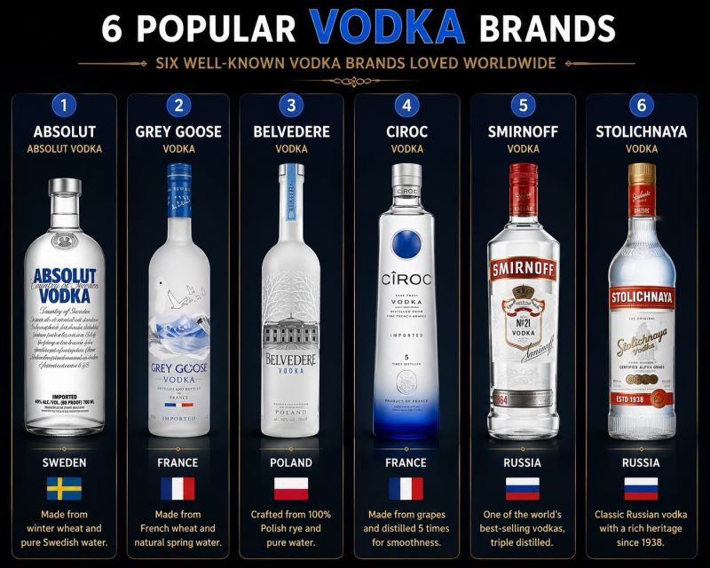

Where each brand is made, what it's distilled from, and how to serve the cocktails that built vodka's reputation behind the bar - glassware, garnish, and the stories behind each drink.
Vodka is the most neutral of the major spirits by design, which is exactly why the brand and the base ingredient matter more than most drinkers assume. A vodka distilled from wheat carries a slightly different texture on the palate than one distilled from potatoes or grapes, and that difference shows up clearly once the spirit is mixed into a cocktail rather than sipped alone. For hospitality teams building a back bar or training new bartenders, understanding where a bottle comes from and what it's made of is the difference between a generic pour and an informed recommendation. This guide covers six of the world's most recognised vodka brands, followed by twelve cocktails that shaped vodka's place in cocktail culture - where each drink is first recorded, how it's traditionally served, and the glass and garnish that complete it.
Produced in Ahus, in southern Sweden, Absolut is distilled from winter wheat and drawn from the town's own deep well water. The brand has used the same water source and a single distillery since its 1879 origins under Lars Olsson Smith, giving it a clean, slightly sweet character that made it one of the first "designer" vodkas to build a global identity through branding and design as much as taste.
Grey Goose is distilled in France using French wheat, primarily from the Picardy region, and filtered through natural limestone in Cognac before being cut with spring water from Gensac-la-Pallue. Launched in 1997, it was one of the first vodkas to market itself explicitly as a luxury spirit, and its soft, rounded profile made it a fixture in premium martinis and vodka sodas.
Belvedere is produced in Zyrardow, Poland, using 100% Dankowskie rye and Polish spring water, and it holds the distinction of being the first vodka certified as authentically Polish by the Polish government. Rye gives the spirit a slightly spicier, more textured finish compared with wheat or potato vodkas, which is why it's often favoured for cocktails where the vodka needs to hold its own against stronger mixers.
Unusually for a vodka, Ciroc is distilled from grapes rather than grain - specifically Mauzac Blanc and Ugni Blanc grapes grown in the Gaillac and Cognac regions of France. The grape base and five-times-distilled process give it a noticeably smoother, slightly fruit-forward profile, which has made it popular in fruit and citrus-driven cocktails as well as a straight sipping vodka on ice.
Smirnoff traces its roots to 1864 Moscow under Pyotr Arsenievich Smirnov, though the modern brand is now produced in several countries under license, including the United States and the United Kingdom. It's triple distilled and made from a grain base, and its consistent, mild character combined with global availability made it the vodka most responsible for introducing American and European drinkers to vodka cocktails in the 20th century.
Stolichnaya - "Stoli" - was first produced in the Soviet Union in 1938 and remains one of the most recognised Russian vodka names internationally, distilled from grain with a classic, heavier-bodied Russian style. It carries one of the longest continuous production histories of any vodka on this list and is closely associated with traditional, unmixed vodka service - chilled and poured neat.
The cocktails below span nearly a century of vodka's history behind the bar, from Prohibition-era Paris to 1980s London. Where a drink's origin is genuinely disputed - and several famous vodka cocktails are - the most widely credited version of the story is given, since that's the version most guests and trainees will already have heard.
Widely credited to 1941 Los Angeles, where Jack Morgan of the Cock 'n' Bull pub and John Martin, who was trying to popularise Smirnoff vodka in the United States, combined their surplus stock of ginger beer and vodka with fresh lime. The signature copper mug wasn't just branding - it kept the drink noticeably colder for longer, which became part of the appeal and remains the traditional serve today.
A vodka-based variation on the classic gin martini that gained mainstream popularity through the mid-20th century, and was cemented in pop culture by James Bond's "shaken, not stirred" order from 1953 onward. Traditionally stirred rather than shaken by classic bartending standards, since shaking bruises the spirit and clouds the drink, though the shaken version remains the more commonly ordered style today.
The modern Cosmopolitan is most often credited to bartender Toby Cecchini at The Odeon in New York in 1988, building on earlier, less refined versions that had circulated in Miami and Provincetown gay bars during the 1970s. Its bright pink colour and citrus balance made it a defining cocktail of 1990s bar culture, later amplified by its association with Sex and the City.
Most commonly traced to Fernand Petiot at Harry's New York Bar in Paris in the early 1920s, though the exact origin story is one of the most disputed in cocktail history. The classic build includes Worcestershire sauce, Tabasco, celery salt and black pepper alongside tomato juice and vodka, and the celery stalk garnish - added later, reportedly by accident when a guest used it to stir the drink - has since become inseparable from the cocktail's identity.
One of the simplest vodka cocktails, often traced to American oil workers in the Persian Gulf during the 1940s and 50s who reportedly stirred vodka into orange juice with a literal screwdriver in the absence of a bar spoon. Its simplicity made it one of the most widely poured drinks of the mid-20th century and remains a fixture of casual and brunch service today.
A cream-topped descendant of the Black Russian, first appearing in American recipe references around the 1960s, decades after the original Black Russian was created. It remained a relatively minor cocktail until the 1998 film The Big Lebowski, in which the character "The Dude" orders it repeatedly, revived its popularity dramatically and permanently.
Created in 1949 by bartender Gustave Tops at the Hotel Metropole in Brussels, reportedly for Perle Mesta, the then US Ambassador to Luxembourg. It's the direct predecessor to the White Russian and remains popular in its own right for guests who want the coffee-forward flavour without the added cream.
A close relative of the Greyhound (the same drink without the salted rim), the Salty Dog became popular in the mid-20th century as grapefruit juice cocktails gained traction in American and British bars. The salt rim cuts the bitterness of the grapefruit and is what distinguishes it from its unsalted counterpart.
Popularised in the United States during the 1980s alongside a wave of cranberry-based cocktails, the Sea Breeze sits between the Cosmopolitan and the Salty Dog in flavour profile - tart, light, and easy-drinking. It's a reliable warm-weather and poolside order, and its straightforward build makes it a common training cocktail for new bartenders.
A vodka variation on the Tom Collins, a gin-based cocktail first recorded in Jerry Thomas's 1876 Bartender's Guide. The vodka version became common as vodka overtook gin in American drinking preference through the mid-20th century, keeping the same tall, refreshing, citrus-and-soda structure of the original.
Invented in 1983 by bartender Dick Bradsell at the Soho Brasserie in London, reportedly after a well-known model asked for a drink that would "wake me up, then f*** me up." Bradsell's original name for the cocktail was the Vodka Espresso, and it has since become one of the most consistently ordered modern classics worldwide, particularly after dinner. The three coffee bean garnish traditionally represents health, wealth and happiness.
Credited to Norman Jay Hobday at Henry Africa's bar in San Francisco in the mid-1970s, the Lemon Drop Martini was created as a sweeter, more approachable answer to the sharper citrus martinis of the era. The sugared rim is essential to the drink's identity and distinguishes it clearly from other lemon-vodka cocktails that skip the rim entirely.
| Cocktail | Glass | Service |
|---|---|---|
| Moscow Mule | Copper mug | Over ice |
| Vodka Martini | Martini glass | Up |
| Cosmopolitan | Martini glass | Up |
| Bloody Mary | Highball / pint glass | Over ice |
| Screwdriver | Highball glass | Over ice |
| White Russian | Old fashioned glass | Over ice |
| Black Russian | Old fashioned glass | Over ice |
| Salty Dog | Old fashioned / highball, salt rim | Over ice |
| Sea Breeze | Highball glass | Over ice |
| Vodka Collins | Collins glass | Over ice |
| Espresso Martini | Martini glass | Up |
| Lemon Drop Martini | Martini glass, sugar rim | Up |
Guests rarely ask for a cocktail by its full build - they ask for "a Moscow Mule" or "an Espresso Martini" and expect the correct glass, the correct garnish, and the correct level of dilution without having to specify any of it. Getting the glassware wrong on a classic cocktail is one of the fastest ways to signal an undertrained bar team, even if the drink itself tastes correct. Training staff on the story behind each cocktail - not just the recipe - also gives them something genuine to say when a guest asks "what's in this?", which builds trust and often leads directly to a repeat order or an upsell to a premium vodka brand.
Matching brand to cocktail matters too. A grape-based vodka like Ciroc suits citrus-forward drinks like the Cosmopolitan or Lemon Drop Martini well, since the fruit notes complement rather than compete. A rye vodka like Belvedere holds its own in a Bloody Mary's heavier spice profile. Wheat-based vodkas like Absolut or Grey Goose are the safest default for classic builds like the Vodka Martini, where a clean, neutral character is exactly what the drink calls for.
Back to Blog